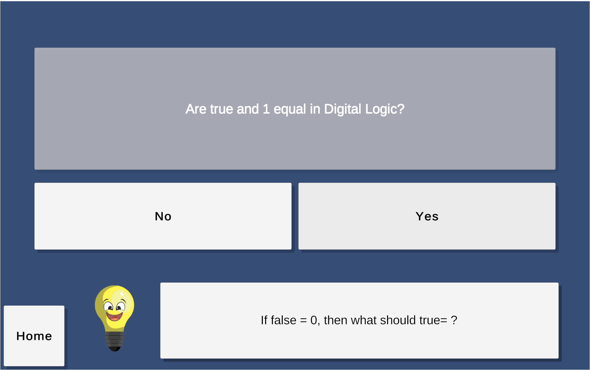
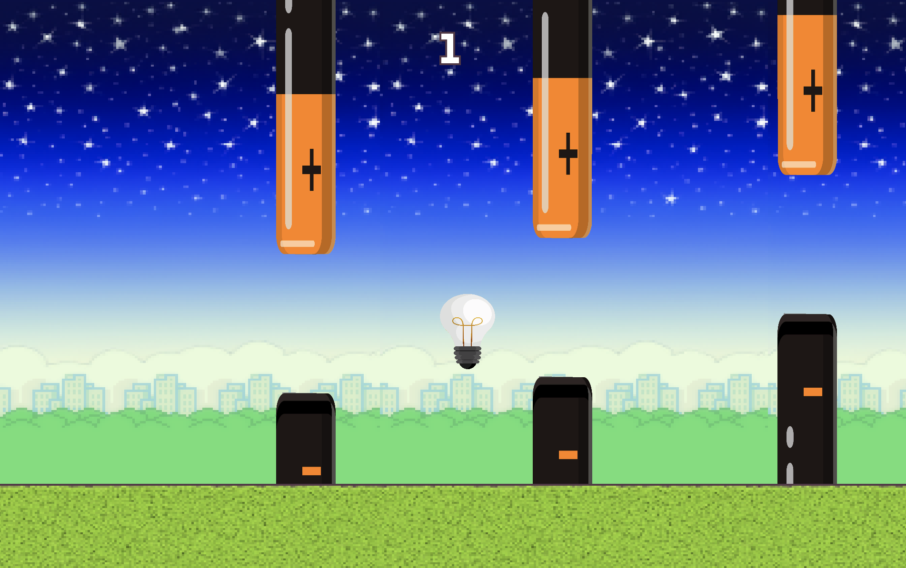
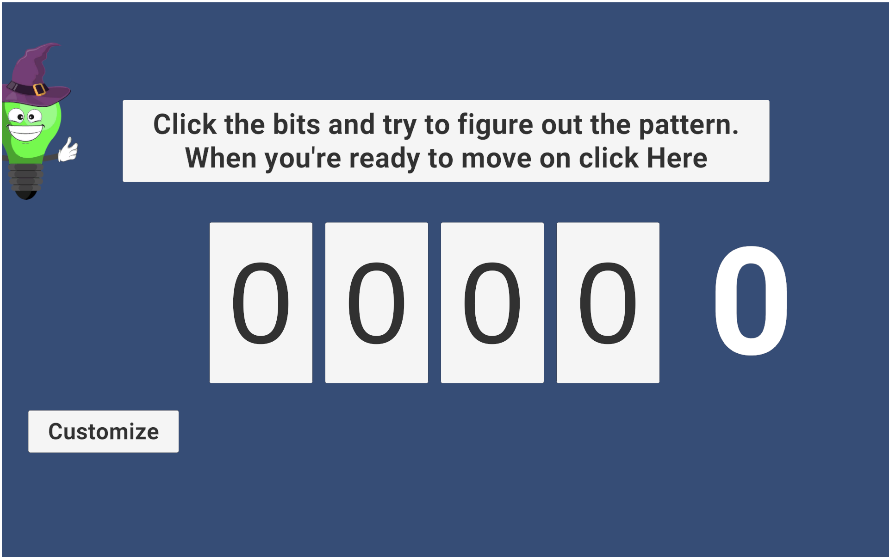
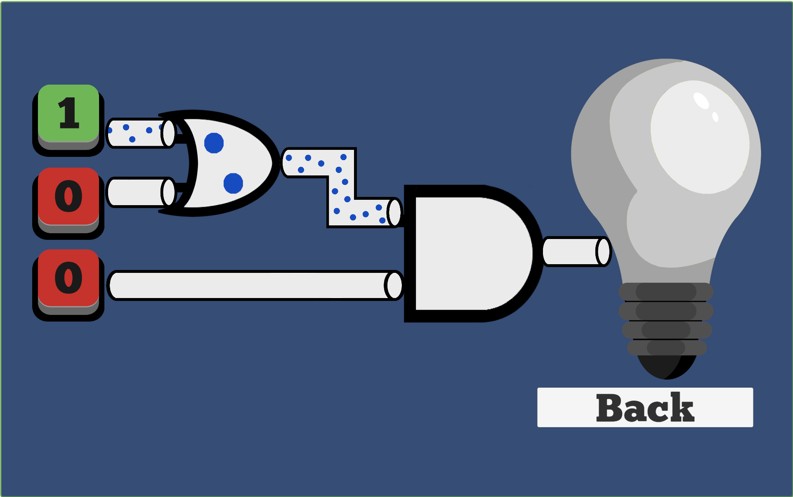

Module 1
Introduction to Digital Logic
Welcome to an introduction to digital logic. The goal of this module is to teach the fundamentals of digital logic in an interactive, fun, and engaging way. The module will begin with a lesson in true and false boolean logic concepts, laying the groundwork for the upcoming lessons. After true and false, students will learn about high vs. low signals and how these signals can be interpreted as true or false, or be represented in binary. Therefore, the next lesson will be on binary numbers, tying together these three lessons and how they are all related. These lessons are the foundation for the fourth lesson, an introduction to logic gates. AND, OR, and invertors will be introduced. These lessons will then come together in the final, interactive module game. This combinational logic game combines all of the lessons from the module to terach students combinational logic concepts. The interactive lessons can be found below.
Click Below for True and False Lesson Plan
Click Below for High and Low Lesson Plan
Click Below for Binary Numbers Lesson Plan
Click Below for Combinational Logic Lesson Plan
After completing Module one, please fill out the following survey below.